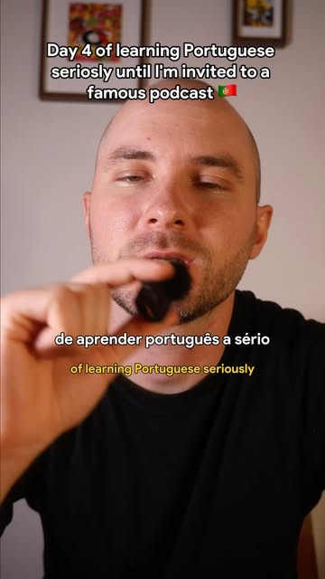

Instagram Post

Lá malta. What I'm about to share is one of the best series on Netflix in Eur...
video transcript (enriched by ClaudeClaw)
Summary
[VIDEO]
Lá malta. What I'm about to share is one of the best series on Netflix in European Portuguese that will take you closer to fluency.
[VIDEO]
Lá malta. What I'm about to share is one of the best series on Netflix in European Portuguese that will take you closer to fluency. I think you know what to do. Share it and save it. The series is called Gloria. It has one season, 10 episodes, and the Portuguese there is excellent. Real European Portuguese. The kind you hear in Lisbon, near Lisbon, and in some other parts of Portugal. Not exaggerated, not artificial. And what I love about this series is the variety of registers. You can hear how Portuguese elites speak. Duas, duas vezes. Com quem é que o pai está a falar? Ramos, Ramos. É agora o novo diretor da PIDE. And how people in rural areas speak. Eu perdi a final contra os ingleses. O problema é que vai ser Roma, Vitória. Different accents, different rhythms, different vocabularies. The acting is great, the production quality is great, and on top of that, you get important historical context about Portugal. You'll understand Portugal's role between
View original on Instagram Post →